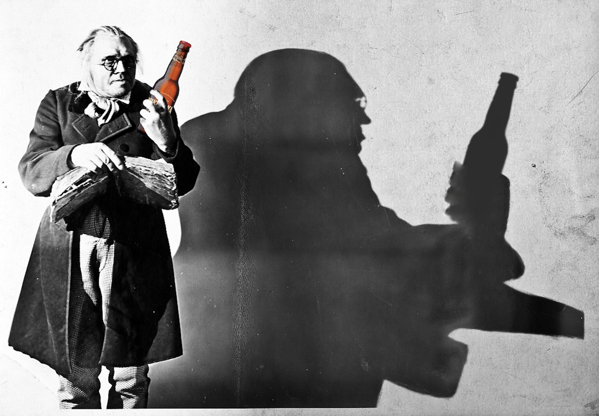

A Brief History Lesson in Cinema...with Beer!
Three classic films and three great beers
If we’re going to be serious about our blog here at Movies & Beer, we’re going to have to do our homework. That’s why I’ve taken it upon myself to dig deep into film history and attempt to give you all a brief introduction about the early days of cinema, and some of the major films that shaped the future of filmography. The Great Train Robbery, Battleship Potemkin, and The Cabinet of Dr. Caligariwill all be covered, and of course I haven’t forgotten about drinking some of my favourite beers, Steam Whistle, Muskoka’s Mad Tom IPA, and Erdinger Weissbier along the way.
In order to get a better perspective on cinema as we know it, we’ll have to go back roughly before 1906 to what is known as the period of the “cinema of attractions”. As you may expect, early films were structured around the appeal of the then considered magical use of the moving picture. The kinetoscope invented by Thomas Edison in the late 1880’s, was the first revolutionary approach to displaying a moving image, and pioneered the future of film thereafter. However, films were nothing more than carnival attractions, as most were very short in length and merely displayed people performing simple feats of strength and agility.
It wasn’t until the art form began to incorporate some kind of narrative, like in The Great Train Robbery (1902) that film started to become what we know it to be today. I have to use the term narrative loosely in regards to this film because it’s very much a secondary characteristic of the film, as it primarily focusses on depicting what a train robbery might look like, rather on the who, what, where, and why of the situation. The spectacle of the robbery takes precedence over any specific person in the film; therefore it still succumbs to the expectations of the audiences at the time. The idea of moving images was still very fresh, and most people would rather see something interesting rather then follow any singular plot. Arguably, this is because the medium hadn’t yet developed any of the tried and true story telling techniques used in film today.
Accompanying me during my time viewing The Great Train Robbery was a cold bottle of Steam Whistle. This nice clean tasting Pilsner straight form the heart of downtown Toronto, matched perfectly with the film. The brewery itself is located in a converted steam locomotive repair facility, and they have daily tours which I had the pleasure of going on last year. They pride themselves on crafting a single quality beer, which is a different strategy for most breweries. But you can tell with one taste that Steam Whistle really is a quality beer, and in my opinion perfect for the summer.
By the 1920’s cinema started to become much more narratively driven, and a film that exemplifies this change is the eerily creepy The Cabinet of Dr. Caligari directed by Robert Wiene. The film is generally depicted as a flashback being recollected by the protagonist Francis, and is one of the first examples in film of a story framed in this way. The narrative centres on Francis and his love interest Jane who investigate a travelling carnival act involving a man named Dr. Caligari and his half-conscious companion Cesare whom he keeps in a coffin. You can instantly tell while watching, that the aesthetic ideals of the cinema of attractions live on in this film as well. From the jagged architecture to the painted shadows, everything about this film is meticulously crafted to depict a world to the audience that is spectacular and haunting. What you may also find is that this film has been a direct inspiration to many filmmakers such as Tim Burton, who take advantage of transforming the landscape and style of their films into embodiments of the tone and theme of the narrative.
Look familiar?
In vein of the film, I felt Muskoka breweries Mad Toms IPA would be the most appropriate choice for beer. Be forewarned that those who haven’t acquired a taste for IPA’s should be cautious, but for the experienced IPA connoisseur, this is one of the best around. It’s deeply flavourful and sweetly bitter, and definitely for those looking to take their time as they drink and appreciate the experience.
Muskoka’s ad campaign behind this beer is what truly ties it together with this film. It’s primarily inspired by the mysterious death of Tom Thomson (the famous Group of Seven painter), and arguably the artistic styling’s introduced by films like The Cabinet of Dr. Caligari. From the black and white sketch of Tom, to the ominous rendering of the lake and boat he was so famously last seen alive, this beer fits perfect into the expressionistic world created by Robert Wiene.
The final film I decided take a look at as a part of my brief history lesson is the episodic, Russian propaganda film Battleship Potemkin (1925) directed by Sergei M. Eisenstein. This film revolutionised cinema by using montages to create connections between separate scenes that may seem unrelated by themselves, but when placed together can provoke a deeper meaning then any one of them can alone. Still, this film may not be the pinnacle of narrative development in film, but it’s still another major step forward in evoking more complex emotions in the audience, and solidifying this editing style in filmography forever.
The film dramatizes the Russian rebellion against the Tsarist after a mutiny on the Battleship Potemkin. The most famous scene in the film is known as “The Odessa Steps” sequence, and is still used today as an example for the power of montage editing. To break down the scene, a depiction of a baby carriage is followed by soldiers firing at people running down the large Odessa steps, which is followed by scenes of dying citizens, which is then again followed by the baby carriage. All of this generates the idea that Tsarist soldiers are evil, and that it is wrong to kill innocent civilians who have no means of protection, and that not even children are spared their lives in the wake of such brutal army. The only pitfall to this technique is that it leaves very little room for interpretation, and only gives the audience what they need to see to understand what the director is trying to convey, as opposed to equally balancing the shared humanism of the dying citizens and that of the soldiers killing them. I’m not in any way endorsing the killing of innocents, but I do endorse giving everyone their fair share in explaining themselves. Think about this the next time you watch a modern Documentary (or any form of entertainment for that matter), as they still use these techniques to coerce the audience into believing the vision of the film maker rather than telling a balanced two sided story.
The final beer to accompany me along this journey was Erdinger Weissbier, which I first had the pleasure of having at a pub on the campus at my old alma mater. I would sip this well carbonated, almost banana tasting wheat beer as my peers and I would talk philosophy, history and psychology, and maybe plan a rebellion ourselves. This beer also has some rich history, dating back to 1886 in Germany, and is the largest wheat brewery in the world. It’s starting to be easier to come by, and I’d recommend picking up a bottle or two as this was my favourite beer for a very long time.
Well I hope that gives you a brief perspective on the history of cinema, and also a few beer options the next time you go to your local liquor store. I should mention that one of the bonuses of doing this blog post on these older films was that they are all public access, so I’ll be leaving links for everyone bellow so everyone can get a little taste of film history as well.